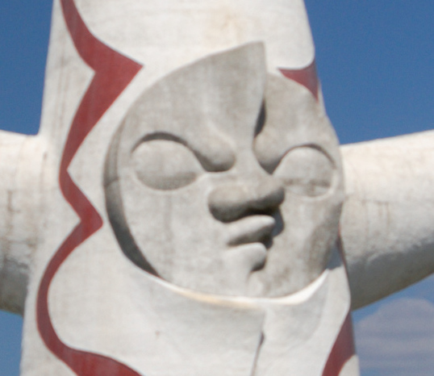
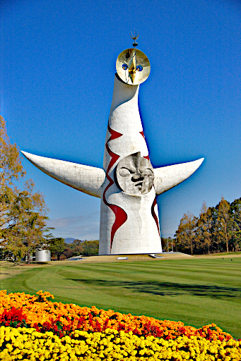

以前タムロンの初期不良に引っかかったと言って以下のような画像を載せました。

まぁ AF でピントが全然合ってなかったわけです。
その後 2 度レンズをタムロンに修理に出し、タムロンがこれは直せないということでレンズが新品に交換されたというのはこれまでに述べたとおりです。
その後新しく送られてきたレンズでいろいろテストしていたわけですが、PENTAX *ist DL2 の裏メニューを使って AF 微調整を行ってから (タムロンにホディのせいと言われて気になっていたので)、本日万博記念公園に再リベンジに行ってきました。
そして上記の写真が以下のようになりました。ちなみに 26mm F2.8 ND16 AF にての撮影です。
若干の甘さがあるもののいいではないですか。
で以下が上記画像を切り抜いた元の画像です (GIMP で画像縮小時にシャープネスをかけすぎました)。

ほぼ実用上問題のない状態になりました。1 ヶ月半以上かかってしまいましたが 2 度も修理に出してよかったです。
ただ一つ想定外だったことがあります。F2.8 開放で遠方の太陽の塔を撮れば手前の花壇はもっとボケるはず、という予測は大きく外れてしまいました。もう少しボケてくれると思ったんですけどね。そのために F2.8 で太陽の塔にピントがビシッと合うようにしたかったわけですから。